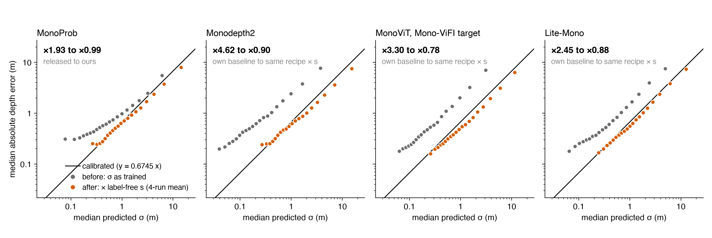
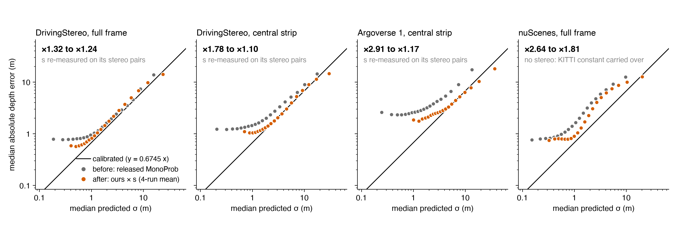

Range-aware uncertainty calibration in self-supervised monocular depth
The Chinese University of Hong Kong, Shenzhen
The size of a learned depth uncertainty can be re-measured without labels where the model is used. One constant, read from stereo pairs, sets that size; together with retraining, it cuts a self-supervised model's worst-range miscalibration by 86%.
Problem. Robots act on the size of a depth uncertainty σ, not only on its ranking. Self-supervised depth models are built for places without labels, yet their σ is checked almost only by ranking, which cannot see its size. On KITTI, MonoProb's σ is too small in every depth range; in the nearest range the typical error is 3.7× what σ implies. Retraining on self-supervised signals alone never fixed this.
Finding. The right correction differs by network and by dataset, so it has to be measured where the model is used, and that is exactly where no labels exist. A constant read from stereo-matching residuals does this job: on four networks and three driving datasets it lands at the level a LiDAR-fitted constant would give, without reading any ground-truth depth. Carried to a dataset with no stereo, it does not transfer.
Method. The released MonoProb network is frozen as teacher and a student is retrained from it by self-distillation. The student's σ is trained toward where its depth disagrees with a second self-supervised network, MonoViT, which serves only as the target for σ. After training, σ is multiplied by one number s, measured once from stereo pairs. At inference a single image goes in.
Figure 1 makes this visible. Each point groups pixels with similar predicted uncertainty σ and plots their typical actual error. Points on the line are calibrated: their typical error is what σ predicts. MonoProb's grey points all lie above it: its uncertainty is too small, most of all where it is most confident. Ours, in blue, moves onto the line for most groups; its two most confident groups stay above it and its least confident sit slightly below. Under a mean-square criterion, which weights rare large errors more, the gap narrows from 3.6× to 1.2× but does not close.

Figure 1. Released MonoProb base model (ResNet-18, 640×192) and ours, mean of 4 runs, on our KITTI validation split.
Does it carry beyond MonoProb?
A constant read from stereo-matching residuals does this job: on four networks and three driving datasets it lands at the level a LiDAR-fitted constant would give, without reading any ground-truth depth. Carried to a dataset with no stereo, it does not transfer.


Manuscript in preparation. Preliminary results on our validation split; held-out evaluation pending. Preprint expected November 2026. A one-page summary is available on request: ijunsuk9797@gmail.com